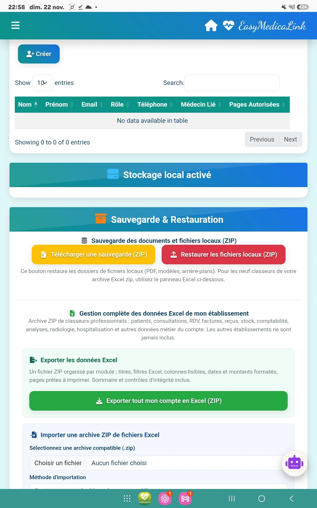
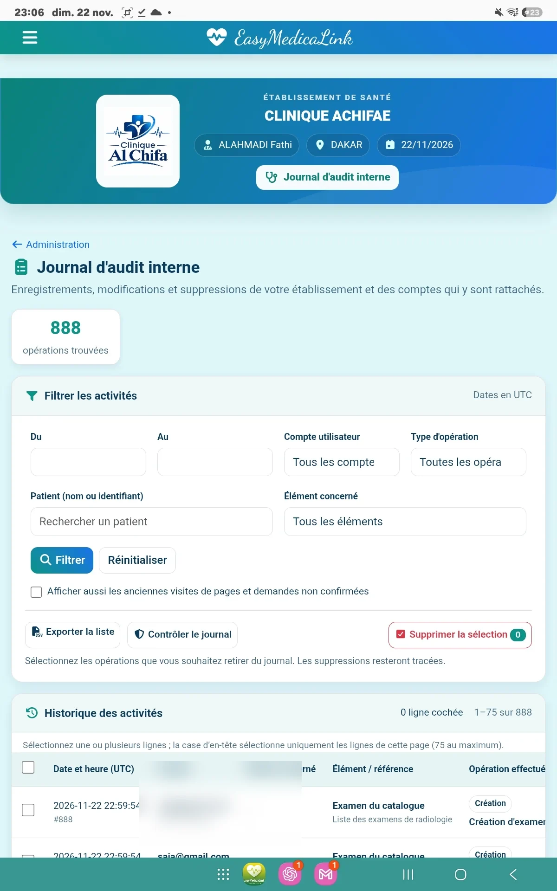
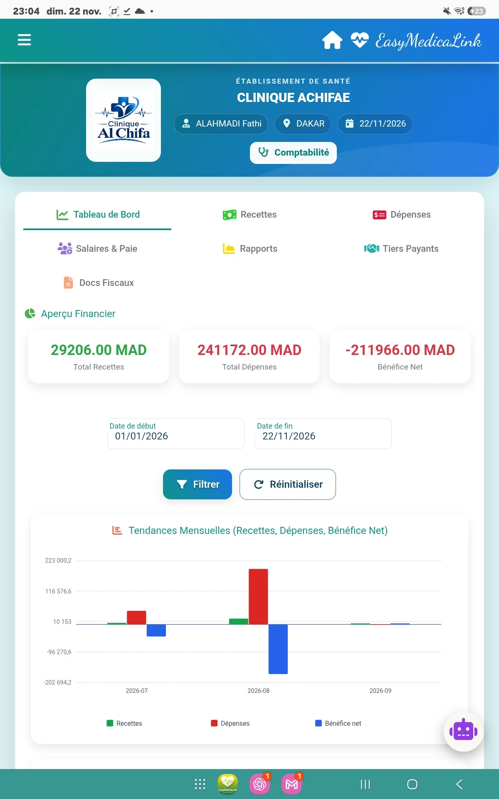
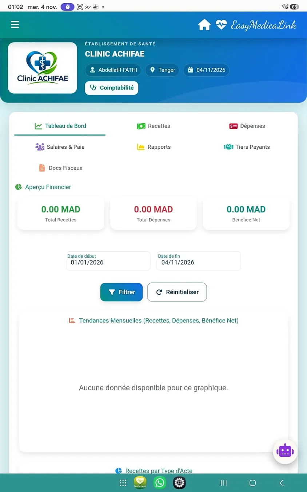
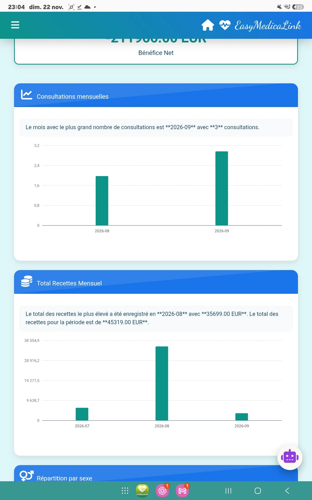
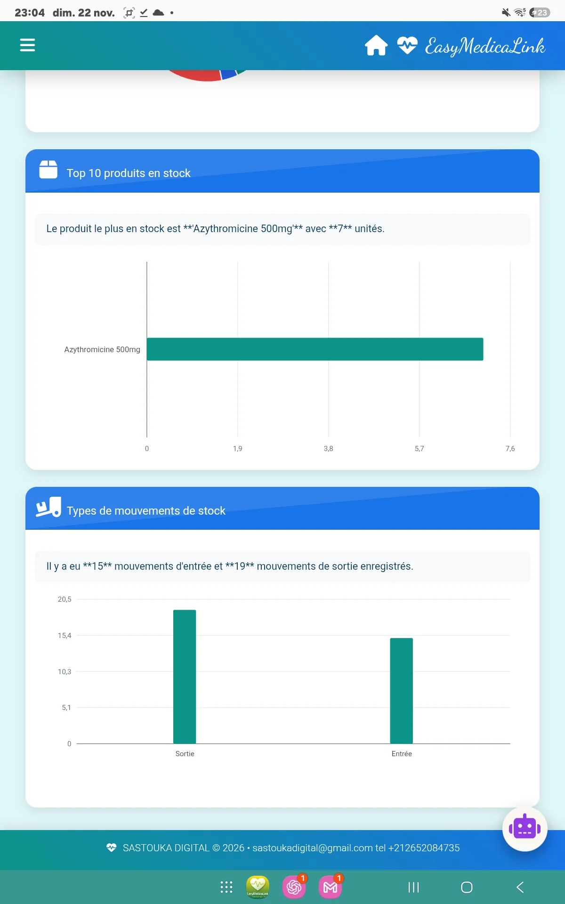
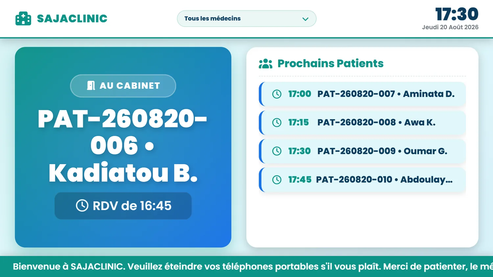

EasyMedicaLink se présente ici comme une plateforme de gestion médicale complète : un tableau de bord central, des modules cliniques et administratifs, des documents PDF et des outils de pilotage conçus pour les cabinets, cliniques et centres de soins.
1. Un tableau de bord qui distribue l’ensemble des usages
Le tableau de bord rassemble les accès vers les rendez-vous, les patients, les consultations, les urgences, l’hospitalisation, les factures, la biologie, la radiologie, la pharmacie, la comptabilité, les statistiques, l’administration, le guide, la salle d’attente et l’assistant IA. Cette entrée unique aide l’équipe à ne pas se disperser.

Un autre aperçu montre aussi l’aide contextuelle Synapse directement au-dessus de l’écran d’accueil. Cela renforce la logique de découverte guidée du logiciel.

2. Paramètres, comptes, sauvegardes et journal d’audit
La section d’administration permet un paramétrage concret : identité de l’établissement, devises, TVA, horaires des rendez-vous, mise en page PDF et activation des modules d’accueil. L’objectif est de personnaliser le logiciel selon l’organisation du cabinet ou de la clinique.

La gestion des comptes permet ensuite de créer des utilisateurs, de définir les rôles et d’activer les droits d’accès module par module. C’est un point important pour séparer les usages administratifs, médicaux et techniques.

Les captures montrent aussi les fonctions de stockage local, de sauvegarde/restauration ZIP et d’export/import Excel, ainsi qu’un journal d’audit interne pour tracer les opérations effectuées sur l’établissement et les comptes.


3. Patients, consultation et hospitalisation
La gestion des patients donne une vue structurée des dossiers avec des actions rapides. Elle constitue le point de départ naturel avant une consultation, une hospitalisation ou la production d’un document.

En consultation, le logiciel permet de saisir les signes cliniques, la tension, la température, le diagnostic et les commentaires. Les boutons de bas de page montrent aussi la logique de génération de prescriptions PDF.

Pour l’hospitalisation, un dossier spécifique rassemble les constantes, l’ordonnance/protocole, les résultats d’examens et les consignes. Les onglets dédiés au suivi infirmier et médical facilitent le travail d’équipe.

4. Ordonnances, factures, paiements et documents PDF
EasyMedicaLink met en avant la génération de documents directement depuis les écrans de travail. Côté médical, les ordonnances et prescriptions PDF sont rattachées au flux de consultation.

Côté administratif, l’écran de facturation montre la préparation d’une facture avec numéro, date, devise, TVA, services, lignes d’actes et gestion du tiers payant. Un autre onglet permet l’enregistrement des paiements et le suivi des opérations financières.

Les ordonnances, les factures et le suivi des règlements participent à un parcours administratif cohérent.
5. Examens complémentaires, pharmacie et stock
Les modules de biologie et de radiologie illustrent une logique de saisie structurée, avec identification du patient, formulaire de résultat, conclusion et génération du document associé. Cela permet de garder les examens reliés au dossier patient.


Le module pharmacie/stock complète cet ensemble avec un aperçu de l’inventaire, des alertes de stock bas et des derniers mouvements enregistrés.

6. Comptabilité, statistiques et indicateurs
La partie comptabilité apporte un suivi des recettes, des dépenses, du bénéfice net, des rapports et des tiers payants. Les captures montrent également des graphiques mensuels permettant de comprendre l’évolution de l’activité.

Les statistiques médicales synthétisent quant à elles le nombre de factures, de patients, de rendez-vous, les recettes totales et même la valeur du stock. D’autres écrans vont jusqu’à détailler des graphiques par périodes, consultations mensuelles ou mouvements de stock.



7. Synapse et l’assistant IA
Synapse est un outil d’assistance au professionnel de santé, et non un remplaçant de son jugement médical. Les captures montrent un assistant médical dédié, avec un mode de questions générales et un mode d’analyse selon la configuration disponible.

8. Salle d’attente, réseau local et découverte multi-postes
Enfin, la capture de salle d’attente TV montre qu’EasyMedicaLink peut aussi s’inscrire dans un environnement plus large que le seul poste de travail. Cette logique s’accorde avec un déploiement sur PC serveur et des accès Windows/Android compatibles sur le même réseau local, selon votre configuration.

EasyMedicaLink réunit ainsi soins, documents, équipes et fonctions de pilotage dans un environnement intégré.